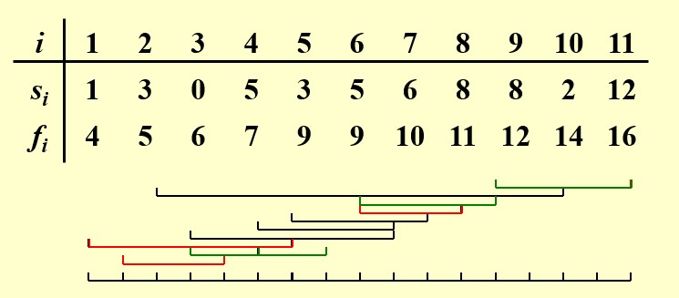

day9 Greedy Algorithms 贪心
基本概念
贪心算法常用于解决优化问题
优化问题： 给定一系列的限制和一个目标函数，在可行解中找到能使目标函数取最优值的解，称为最优解
贪心算法在每一步都采取最优策略，之后不会再更改，且保证每一步均可行
注意：贪心算法只有在局部最优=全局最优时有效
贪心算法无法保证能找到最优解，但其找到的解会与最优解十分接近，因此，当寻找最优解耗时过长时可以考虑用贪心算法的解近似替代
例如：在使用回溯法求最优解的时候，我们往往会遇到难以剪枝的情况，此时我们可以考虑用贪心算法得到一个近似最优解，以此作为剪枝条件，如果当前枚举到的情况甚至不如该解，则直接剪枝
Activity Selection Problem 活动选择问题
假设有$n$个活动$S={a_1,a_2,···,a_n}$，都需要用到同一间教室，每个活动$a_i$占用的时间区间为$[s_i,f_i)$，且假设$f_1<f_2<···<f_n$，求能够安排的最多活动数量

动态规划：
设$S_{ij}$表示开始时间在$a_i$结束之后，结束时间在$a_j$开始之前的最大兼容活动集合（集合中的两两活动时间不重叠）
设$c_{ij}$表示从活动$a_i$结束到活动$a_j$开始这段时间内能够安排的最多活动数量，即$S_{ij}$的元素个数
$c_{ij}=\begin{cases} 0,S_{ij}=\empty\ \max\limits_{a_k\in S_{ij}}{c_{ik}+c_{kj}+1},S_{ij}\neq\empty \end{cases}$
存在冗余： 例如，在最优解中有$a_k$，$a_l$，且满足$a_i<a_k<a_l<a_j$，我们可能在计算$c_{ij}$时锁定$a_k$，然后在计算$c_{ky}$时锁定$a_l$；也可能在计算$c_{ij}$时锁定$a_l$，然后在计算$c_{il}$时锁定$a_k$。两种不同方式的状态转移，导向同一组解$a_k$，$a_l$，从而导致计算的冗余
本质原因：我们想要的是集合，但我们选出的是序列
因此需要将序列的选择转变为集合的选择：强行定下顺序，使得只能得到$a_k$，$a_l$顺序的解，不能得到$a_l$，$a_k$顺序的解
优化后的动态规划：
设$S_i$表示活动$a_1,a_2,···,a_i$的最大兼容活动集合，集合中的两两活动时间不重叠）
设$c_i$表示$S_i$的元素个数，我们最后所求即为$c_n$
$c_i=\max{c_{i-1},c_k+1}$
其中$c_{i-1}$表示不选择$a_i$时，$a_1,a_2,···,a_i$中的最多兼容活动数量，因为不选择$a_i$，所以相当于是$a_1,a_2,···,a_{i-1}$中的最多兼容活动数量
活动$a_k$满足其结束时间早于$a_i$的活动时间，且使得$c_k$取最大值，即$a_1,a_2,···,a_k$中能安排最多数量的兼容活动
现在来检查冗余情况：
假设一共有三个活动$a_1,a_2,a_3$
最优解有两个活动，其中一个为$a_3$
从小到大，看$c_0$如何推出$c_2$
从$c_0$可以推出任意一个只选了一个活动的状态：
- 情况一：只选了$a_1$：$c_1=c_0+1=1$
- 情况二：只选了$a_2$：$c_2=c_0+1=1$（$a_1$与$a_2$不兼容）
- 情况三：只选了$a_3$：$c_3=c_0+1=1$（$a_1$或$a_2$都与$a_3$不兼容）
对于选择了两个活动的状态（最优解，其中一个为$a_3$）：
- 情况一：从前一个情况一推得：$c_3=c_1+1=2$（$a_1$与$a_3$兼容，$a_2$与$a_3$不兼容）
- 情况二：从前一个情况二推得：$c_3=c_2+1=2$（$a_1$与$a_2$不兼容，$a_2$与$a_3$兼容，但我们也可以从中推出$a_1$与$a_3$兼容）
从中我们可以看出，如果$a_1$与$a_3$兼容，那么就没有必要找$a_2$了。然而由于动态规划实际的顺序是从后往前，因此会先去找$c_2$，比$c_1$计算时间更久（因为$c_2$的计算可能还需要$c_1$），因此产生冗余
实际上正向的思考过程就是贪心算法
不同的贪心算法：
1.开始时间早的优先（失败）
2.耗时短的优先（失败）
3.冲突少的优先（失败）
4.结束时间早的优先（成功）
贪心算法的证明：
- 证明1：得到的解是合法的
- 证明2：得到的解是最优的
- 证明2.1：贪心选择性质（对于任意非空子问题$S$，令$b$是$S$中结束时间最早的活动，则$b$在$S$的某个最大兼容活动子集中）
- 证明2.2：最优子结构性质（用贪心策略选择$a_m$后得到子问题$S_m$，那么$a_m$和子问题$S_m$的最优解合并一定可以得到原问题的最优解）
其中，$S_k={a_i|s_i\geqslant f_k}$，即在$a_k$结束后才开始的活动集合
证明2.1：
证明2.2：
如果2.1和2.2成立，那么我们得到如下的构造方式：
$a_1$到$a_n$中，第一个满足要求的活动一定在最优解中，为$a_1$（2.1），$a_1$和子问题$S_1$的最优解合并一定能求得原问题的最优解（2.2），于是转而去求子问题$S_1$的最优解，以此类推
问题变形：
为每个活动$a_i$附加一个分值$w_i$，如何安排才能得到最大分数？
$c_i=\max{c_{i-1},c_k+w_i}$
Huffman Codes 霍夫曼编码
给定了不同字符和相应的使用频率，构建一棵用于霍夫曼编码的树，使得期望编码长度最小。
方法详见离散数学，用最小堆来实现
证明这个贪心算法的正确性：
贪心选择性质：对于字符集$S$，$x,y\in S$是其中频率最低的两个字符，则在$S$的某个最优霍夫曼编码中，$x$和$y$的编码长度相同，且只有最后一位不同.
最优子结构性质：对于字符集$S$，$x,y\in S$是其中频率最低的两个字符，我们用频率为$x$，$y$之和的字符$z$来替换$x$和$y$，得到字符集$S'$，则在$S'$的任意一个最优霍夫曼编码中，我们总可以将叶子节点$z$替换为直接连接$x$和$y$的内部节点，得到$S$的某个最优霍夫曼编码.